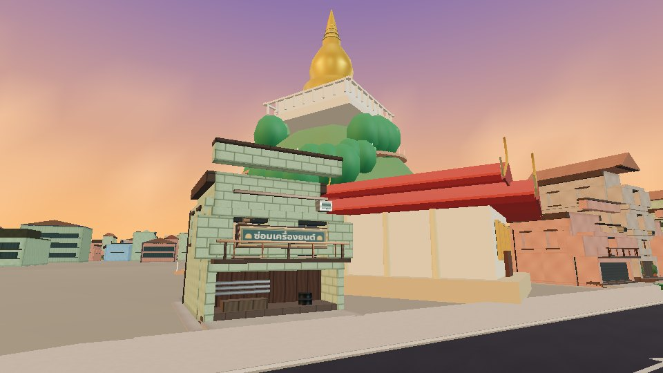
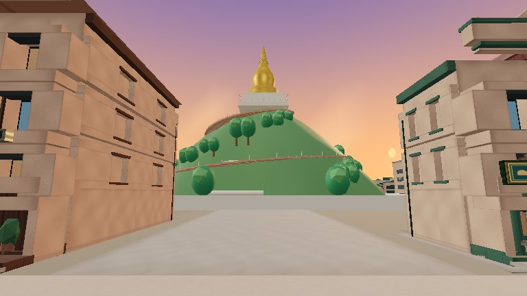
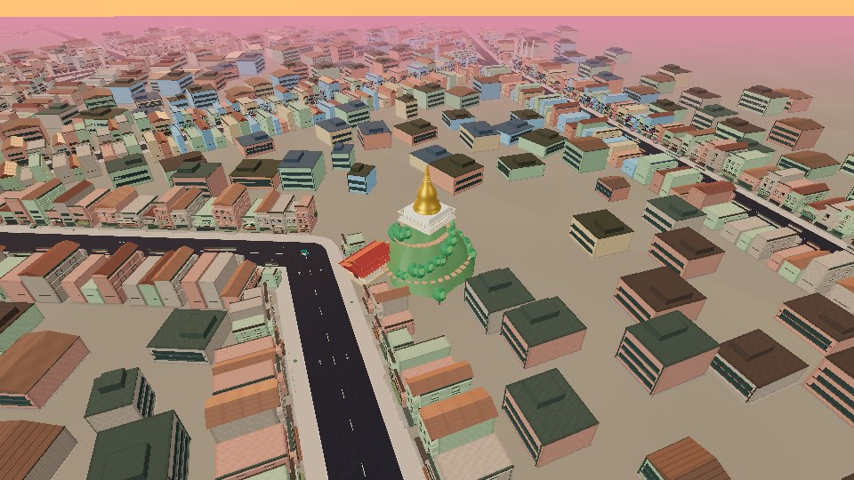
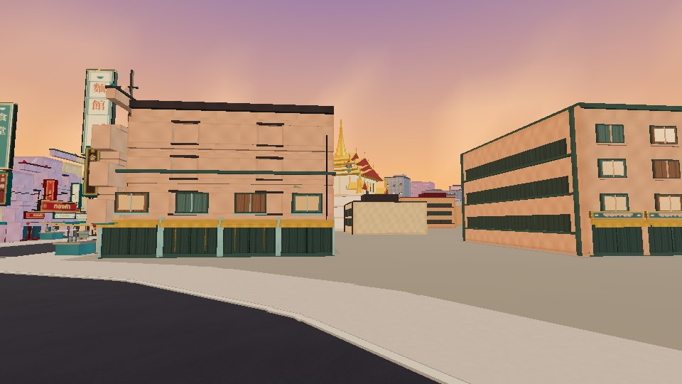
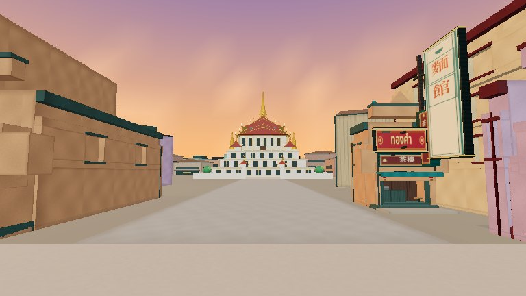
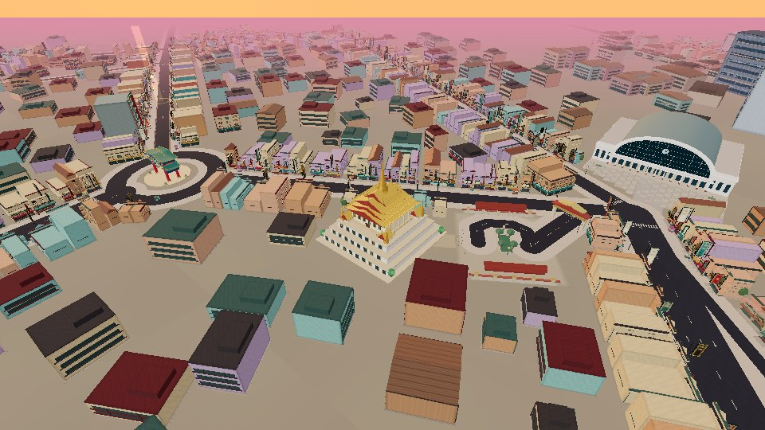

Historic Bangkok reconstruction
Real-world references, PR31 baseline, and actual game captures. No generated illustrations. These are researched arcade interpretations, not surveyed property models. Read the complete QA report.
Grand Palace / Wat Phra Kaew
Sanam Luang
Wat Pho
Giant Swing / Wat Suthat
Golden Mount / Wat Saket
 REAL · licensed reference photograph
REAL · licensed reference photograph
BEFORE · PR31 road-level inspection
AFTER · legal road-level inspection
BEFORE · elevated placement AFTER · elevated placement
AFTER · elevated placement AFTER · ordinary driving camera
AFTER · ordinary driving cameraDemocracy Monument
Hua Lamphong
Wat Traimit
 REAL · licensed reference photograph
REAL · licensed reference photograph
BEFORE · PR31 road-level inspection
AFTER · legal road-level inspection
BEFORE · elevated placement AFTER · elevated placement
AFTER · elevated placement AFTER · ordinary driving camera
AFTER · ordinary driving cameraChinatown Gate / Odeon Circle
Connecting Yaowarat approach
See references/ATTRIBUTION.md for photographers and licences. The street graph, districts and property outlines are compressed design controls. City objects were not hidden for a passing view.